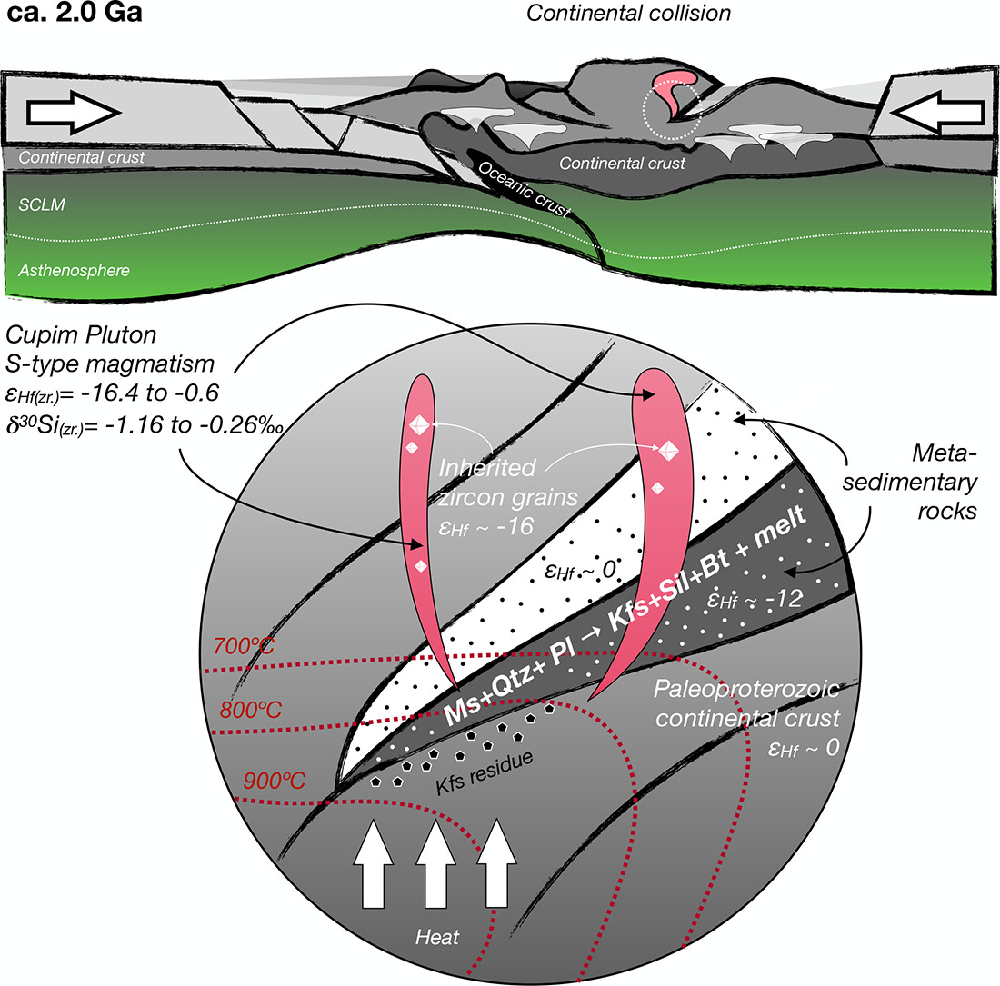

Paleoproterozoic sediment-derived magmas reveal a late orogenic stage in the southern São Francisco Craton, Brazil: Evidence from petrogenesis of the 2.0 Ga Cupim Pluton leucrogranites

Resumo em Português
Granitos derivados de sedimentos (tipo-S) podem fornecer informações detalhadas sobre os processos de retrabalhamento da crosta continental e os regimes tectônicos ao longo do tempo. Suas composições refletem a natureza das rochas sedimentares que fundiram para formá-los, e minerais acessórios herdados podem fornecer informações sobre a idade e a natureza das rochas crustais que contribuíram para a formação de suas rochas-fonte sedimentares. Além disso, granitos tipo-S tipicamente se formam durante estágios colisionais em orógenos modernos, e seus registros Pré-Cambrianos podem fornecer pistas sobre a tectônica antiga. Neste trabalho, apresentamos uma petrogênese detalhada do Pluton Cupim, localizado no Cinturão Mineiro Paleoproterozoico (Brasil). O Pluton Cupim é composto por leucogranitos a duas micas e portadores de granada, fortemente peraluminosos (ASI > 1,1), ricos em K (K₂O/Na₂O > 1) e com baixo MgO + FeO + TiO₂ (<2% em peso). Sua composição é similar à de fundidos produzidos experimentalmente por reações de fusão por desidratação de muscovita/biotita. As razões Rb/Sr e Rb/Ba sugerem que esses leucogranitos foram formados pela fusão de fonte(s) sedimentar(es) heterogênea(s). Os cristais de zircão do Pluton Cupim revelam um período prolongado de fusão crustal (2,01–1,98 Ga) até então desconhecido no Cinturão Mineiro, que por si só evidencia um estágio orogênico colisional tardio no Cráton São Francisco meridional. Os cristais de zircão ígneo exibem εHf(t) entre −16,4 e −0,6 e δ³⁰Si entre −1,16 e −0,26‰, típicos de zircão de granitos derivados de sedimentos. As variações isotópicas de Hf refletem mistura entre pelo menos duas fontes crustais, em consonância com núcleos de zircão herdados que evidenciam contribuições sedimentares predominantemente Arqueanas e subordinadamente Paleoproterozoicas. O posicionamento dos leucogranitos do Pluton Cupim encerra um ciclo de subducção-colisão, sucedendo um longo período de produção de magmas TTG-sanukitoide, e promoveu a estabilização do Cráton São Francisco meridional.